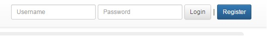

User login and register using mongodb as backend


Documentation
In this week's experiment, I worked on experiments for my final project.
The login and register forms are backed with mongo db such that all data is stored in database instead of in server's memory.
The mongodb is accessed through mongoose plugin of node.js. In this experiment, I used
query and add operations.
Code Snippet
Following code creates user schema, and then create a model using that schema. Subsequent operations will use the model to operate data in mongo db.
userSchema = mongoose.Schema({
username: String,
password: String,
tasks:[{
l1Tag: String,
l2Tag: String,
startTime: Date,
stopTime: Date,
duration: {hours: Number, minutes: Number, seconds: Number},
totalSeconds: Number
}],
tags: [{
tagName: String,
subTags: [String]
}]
})
User = mongoose.model('User', userSchema)
Following code shows how to query by username. Be aware that the operations to database is asynchronous, so we should always respond to client within the database function's callback.
var query = User.where({username: uname})
query.findOne(function (err, user) { // This call is asynchronous, so response inside the callback function
if (user) {
...
} else {
console.log(err)
errorHandler(err)
}
}